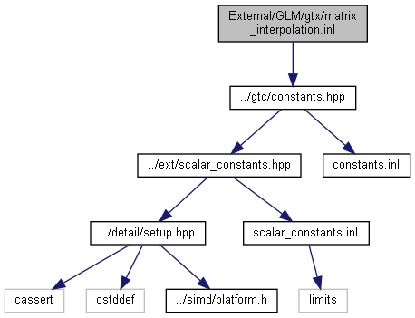

#include "../gtc/constants.hpp"
matrix_interpolation.inl の依存先関係図:

被依存関係図:

名前空間 | |
| glm | |
| Core features | |
関数 | |
| template<typename T , qualifier Q> | |
| GLM_FUNC_QUALIFIER void | glm::axisAngle (mat< 4, 4, T, Q > const &m, vec< 3, T, Q > &axis, T &angle) |
| template<typename T , qualifier Q> | |
| GLM_FUNC_QUALIFIER mat< 4, 4, T, Q > | glm::axisAngleMatrix (vec< 3, T, Q > const &axis, T const angle) |
| template<typename T , qualifier Q> | |
| GLM_FUNC_QUALIFIER mat< 4, 4, T, Q > | glm::extractMatrixRotation (mat< 4, 4, T, Q > const &m) |
| template<typename T , qualifier Q> | |
| GLM_FUNC_QUALIFIER mat< 4, 4, T, Q > | glm::interpolate (mat< 4, 4, T, Q > const &m1, mat< 4, 4, T, Q > const &m2, T const delta) |